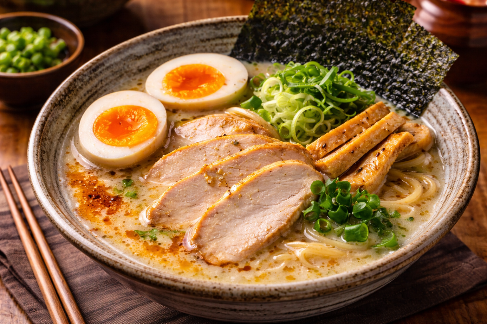
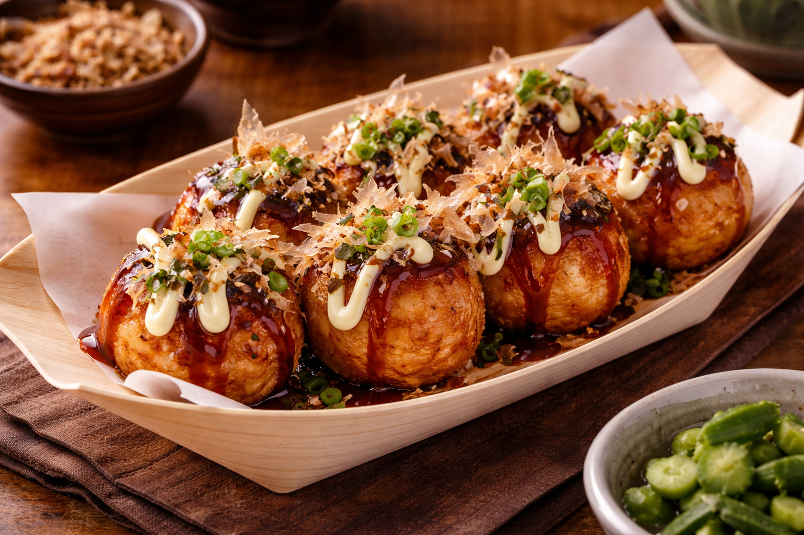
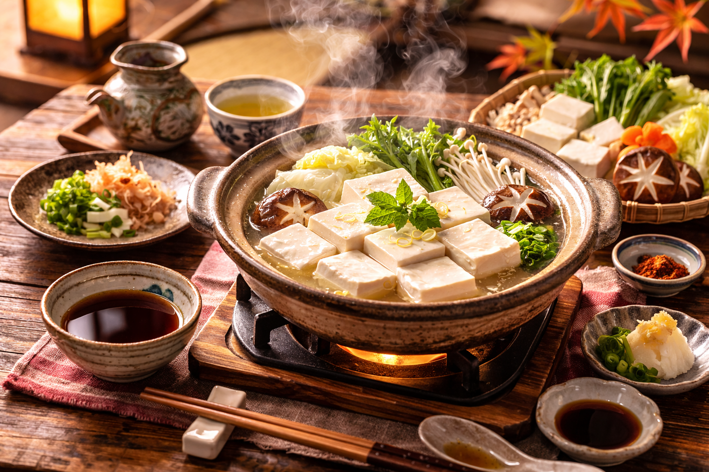

Japanese Food Guides — Hidden Local Restaurants in Japan
The best local food in Japan that Japanese people actually talk about — and most tourists never find."

Best Local Ramen in Tokyo — Hidden Shops Worth the Wait"

When searching for the best ramen in Tokyo, skip the spots with English menus and long tourist queues. The most talked-about ramen shops among Tokyo locals are tucked away in residential neighborhoods like Shimokitazawa. One standout is a small counter-seat shop serving a rich chicken-based broth with thin straight noodles — a true hidden gem in Tokyo that only locals know. Expect a short wait, no English menu, and one of the most authentic ramen experiences in Japan.
Dish highlight: Tori Paitan Ramen
Authentic Takoyaki in Osaka — Beyond the Tourist Stalls

Osaka is world-famous for takoyaki, but the most authentic takoyaki in Osaka is not found near the crowded Dotonbori tourist area. The best local takoyaki spots are small family-run stands hidden in Osaka's residential neighborhoods, where recipes have been passed down for generations. Crispy outside, perfectly soft inside — this is the real Osaka street food experience that most international travelers miss.
Dish highlight: Takoyaki
Traditional Kyoto Food — Local Tofu Cuisine Near Kyoto's Temple Districts

One of the most unique authentic Japanese food experiences is Kyoto's shojin ryori — traditional Buddhist vegetarian cuisine. Local restaurants near Kyoto's temple districts serve seasonal tofu-based meals that are deeply loved by Kyoto residents but easy to overlook without insider knowledge. If you are looking for a truly authentic Kyoto food experience beyond sushi and ramen, this is it.
Dish highlight: Yudofu (hot pot tofu)